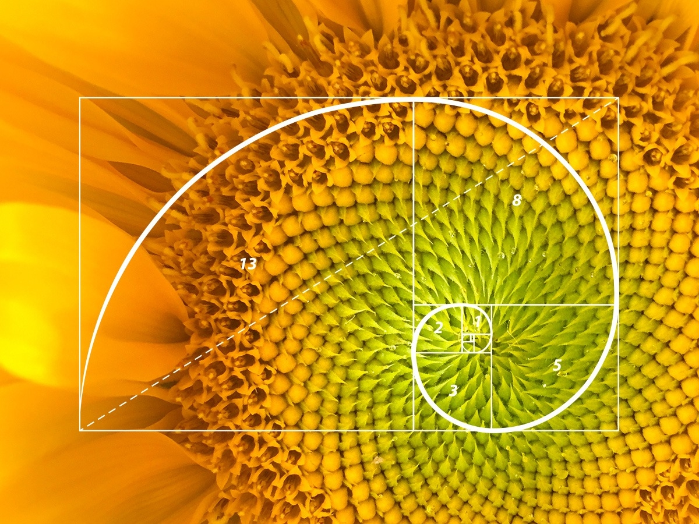
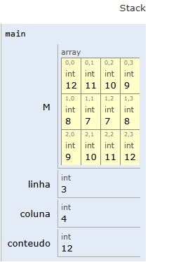
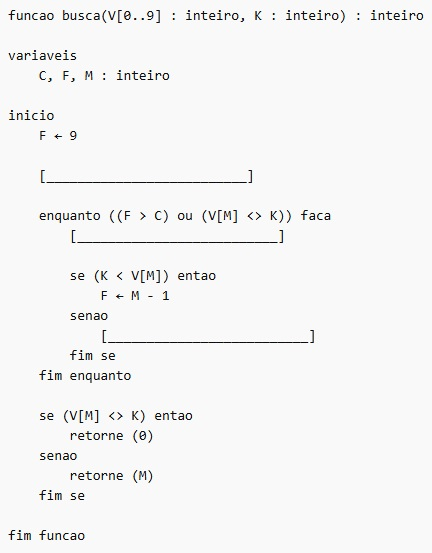

Capítulo 1 REVISÃO TEMAS ESPECÍFICOS ADS - Virtualização, Recursividade, Busca Binária
1.1 Revisão do tema VIRTUALIZAÇÃO E MÁQUINAS VIRTUAIS:
| Exercício 01 - Tomo 01 - questão 05 |
|---|
| O conceito de máquina virtual (MV) foi usado, na década de 1970, no sistema operacional IBM System 370. Atualmente, centros de dados (datacenters) usam MVs para migrar tarefas entre servidores conectados em rede e, assim, equilibrar carga de processamento. Além disso, plataformas atuais de desenvolvimento de software empregam MVs (Java, .NET). Uma MV pode ser construída para emular um processador ou um computador completo. Um código desenvolvido para uma máquina real pode ser executado de forma transparente em uma MV. Com relação a essas informações, assinale a opção correta. |
|
|
|
|
|
1.1.1 Resolução:
Máquinas Virtuais são ambientes de memória e processamento criados por um software chamado hypervisor:
O que faz um hipervisor ?
|
1.2 Revisão do tema RECURSIVIDADE em linguagens de programação:
| Exercício 02 - Tomo 02 - questão 03 |
|---|
 |
| Os termos da sequência de Fibonacci são definidos por: |
Uma solução recursiva para o cálculo do i-ésimo termo da sequência é dada pela função a seguir. |
|
| Acerca da execução recursiva dessa função, assinale a opção incorreta. |
|
|
|
|
|
1.2.1 RESOLUÇÃO:
A sequência de Fibbonacci
0, 1, 1, 2, 3, 5, 8, 13, 21, 34, 55, 89…
| Ordem | zero | 1º | 2º | 3º | 4º | 5º | 6º | 7º | 8º | 9º | 10º | 11º |
| Valor | 0 | 1 | 1 | 2 | 3 | 5 | 8 | 13 | 21 | 34 | 55 | 89 |
\[ \begin{aligned}[l] F(0) &= 0 \\ F(1) &= 1 \\ F(2) &= F(1) + F(0) \implies (1 + 0) = 1 \\ F(3) &= F(2) + F(1) \implies (1 + 1) = 2 \\ F(4) &= F(3) + F(2) \implies (2 + 1) = 3 \\ F(5) &= F(4) + F(3) \implies (3 + 2) = 5 \\ F(6) &= F(5) + F(4) \implies (5 + 3) = 8 \\ F(7) &= F(6) + F(5) \implies (8 + 5) = 13 \\ F(8) &= F(7) + F(6) \implies (13 + 8) = 21 \\ F(9) &= F(8) + F(7) \implies (21 + 13) = 34 \\ F(10) &= F(9) + F(8) \implies (34 + 21) = 55 \end{aligned} \]
1.2.2 Referências:
• BHARGAVA, A. Y. Entendendo algoritmos. São Paulo: Novatec, 2017.
• CORMEN, T. H. Algoritmos – teoria e prática. São Paulo: LTC, 2012.
• DASGUPTA, S.; PAPADIMITRIOU, C. H.; VAZIRANI, U. Algoritmos. São Paulo: McGraw-Hill, 2006.
• MEDINA, M.; FERTIG, C. Algoritmos e programação – teoria e prática. São Paulo: Novatec, 2005. 1.3 Revisão do tema ALGORITMOS - EXECUÇÃO
| Exercício 03 - Tomo 03 - Questão 06 | |
| Leia o algoritmo a seguir. | |
|
|
Considerando a execução do algoritmo apresentada acima, faça o que se pede a seguir.
|
1.3.1 RESOLUÇÃO:
\[ \begin{array}{cc} & \begin{matrix} \color{blue}{ 0} & \color{blue}{ 1} & \color{blue}{ 2} & \color{blue}{ 3} \end{matrix} \\ \begin{matrix} \color{red}{\scriptstyle 0} \\ \color{red}{\scriptstyle 1} \\ \color{red}{\scriptstyle 2} \end{matrix} & \begin{bmatrix} \text{_} & \text{_} & \text{_} & \text{_} \\ \text{_} & \text{_} & \text{_} & \text{_} \\ \text{_} & \text{_} & \text{_} & \text{_} \end{bmatrix} \end{array} \]
\[ \begin{array}{cc} & \begin{matrix} \color{blue}{ 0} & \color{blue}{ 1} & \color{blue}{ 2} & \color{blue}{ 3} \end{matrix} \\ \begin{matrix} \color{red}{\scriptstyle 0} \\ \color{red}{\scriptstyle 1} \\ \color{red}{\scriptstyle 2} \end{matrix} & \begin{bmatrix} \text{1} & \text{2} & \text{...} & \text{...} \\ \text{_} & \text{_} & \text{_} & \text{_} \\ \text{_} & \text{_} & \text{_} & \text{_} \end{bmatrix} \end{array} \]

1.4 Revisão do tema ALGORITMOS - BUSCA BINÁRIA - “DIVIDIR PARA CONQUISTAR”.
| Exercício 04 - Tomo 03 - Questão 07 |
| Leia o algoritmo a seguir. |
 |
O algoritmo representado pelo pseudocódigo acima está incompleto, pois faltam 3 linhas de código. A função busca desse algoritmo recebe um vetor ordenado de forma crescente e um valor a ser pesquisado. A partir disso, essa função verificará se o número armazenado no ponto mediano do vetor é o número procurado. Se for o número procurado, retornará o índice da posição do elemento no vetor e encerrará a busca. Se não for, a função segmentará o vetor em duas partes a partir do ponto mediano, escolherá o segmento no qual o valor procurado está inserido, e o processo se repetirá. A partir dessas informações, assinale a opção que contém os comandos que completam, respectivamente, as linhas 6, 8 e 12 do algoritmo. |
|
|
|
|
|
1.4.1 RESOLUÇÃO:
O vetor é definido como V[0..9].
Como a variável F (Fim) foi inicializada com 9, a variável C (Começo/Início) deve ser inicializada com o primeiro índice do vetor, que é 0.
Comando: C ← 0Dentro do laço enquanto, a primeira ação necessária para verificar o elemento central é calcular a média entre o início e o fim do segmento atual.
M ← (C + F) / 2O bloco se ( K < V[M] ) trata o caso onde o valor procurado é menor que o centro (ajustando o fim F). O senao (linha 12) trata o caso onde o valor procurado é maior que o centro. Para isso, devemos “trazer” o início do vetor para logo após o ponto médio atual.
C ← M + 1Portanto:
C ← 0
M ← (C + F) / 2
C ← M + 1Letra “A”
1.5
1.6 Revisão do tema RECURSIVIDADE em linguagens de programação:
| Exercício 04 - Tomo 06 - Questão 03 |
Leia o texto a seguir. Uma função é denominada recursiva quando ela é chamada novamente dentro de seu corpo. Implementações recursivas tendem a ser menos eficientes, porém facilitam a codificação e seu entendimento. |
| Suponha que a função f() é acionada com os seguintes parâmetros de entrada: |
| f( {2, -4, 7, 0, -1, 4}, 6); |
| Nesse caso, o valor de retorno da função f( ) será: |
|
|
|
|
|
1.6.1 RESOLUÇÃO:
Montando a função dentro de um programa C :
#include <stdio.h>
int f(int v[], int n)
{
if (n == 0)
{
return 0;
}
else
{
int s;
s = f(v, n - 1);
if (v[n - 1] > 0)
{
s = s + v[n - 1];
}
return s;
}
}
int main()
{
int v[] = {2, -4, 7, 0, -1, 4};
int n = sizeof(v) / sizeof(v[0]);
int resultado = f(v, n);
printf("Soma dos positivos = %d\n", resultado);
return 0;
}1.6.1.1 Melhorando o nome das variáveis para deixar mais didático:
#include <stdio.h>
int f(int vetor[], int contador) // <== Função do exercício
{
if (contador == 0)
{
return 0;
}
else
{
int resposta;
resposta = f(vetor, contador - 1); // <== Função do exercício
if (vetor[contador - 1] > 0)
{
resposta = resposta + vetor[contador - 1];
}
return resposta;
}
}
int main()
{
int vetor[] = {2, -4, 7, 0, -1, 4};
// descobre o tamanho do contador pelo tamanho do vetor
int contador = sizeof(vetor) / sizeof(vetor[0]);
int resultado = f(vetor, contador);
printf("Soma dos positivos = %d\contador", resultado);
return 0;
}Uma função recursiva chama a sí mesma. Ao fazer isso, em C/C++, ela cria na pilha (parte “organizada” da memória) várias cópias de espaço de memória dela mesma para computar o cálculo em seguida. Cada cópia existente guarda um “momento” (estado) de desenvolvimento do cálculo do algoritmo da função.
Ao final dessa expansão de sí mesma, a função recursiva “revisita” toda a memória executando o cálculo.
Cada replicação de memória na pilha que computa o cálculo tem seu espaço de memória liberado assim que o cálculo é computado.
A pilha (stack) é uma beleza !!
No final, o resultado é entregue (retornado) pela função.
Demonstração:
Rodar o código no PyTutor: